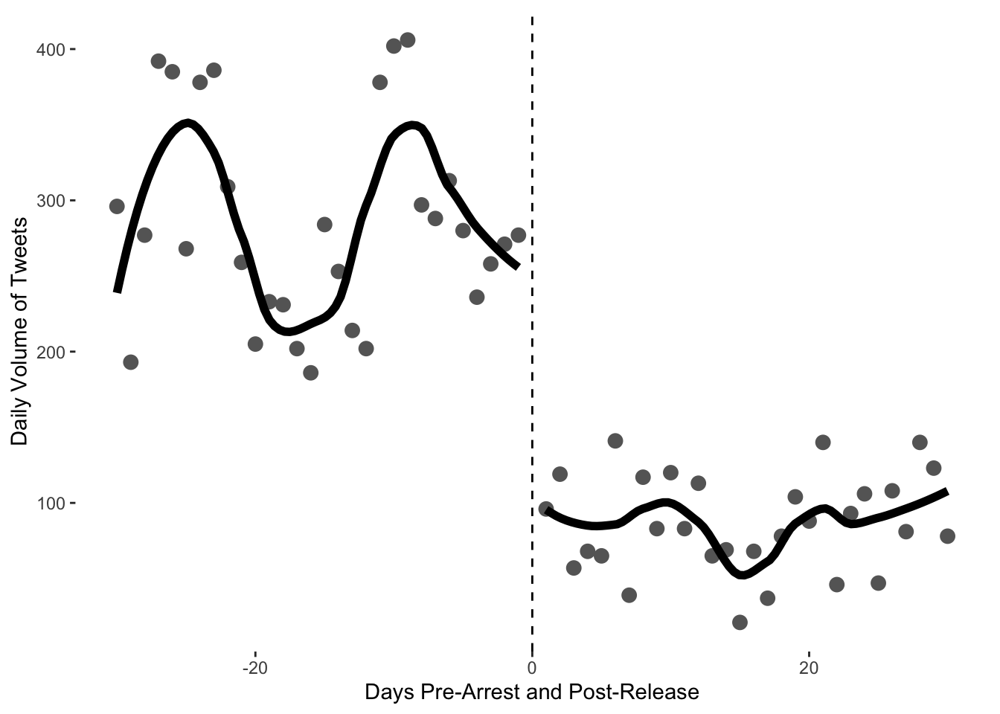
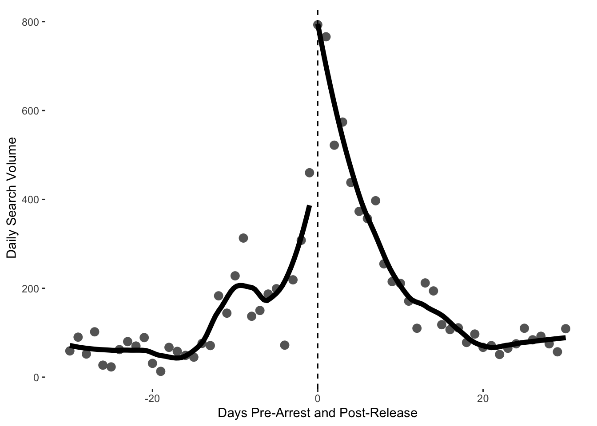
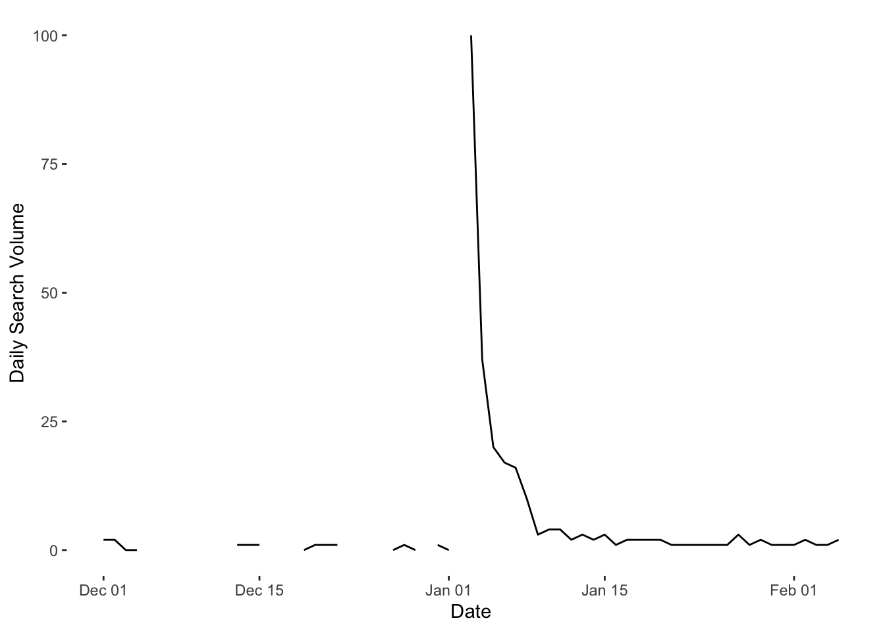
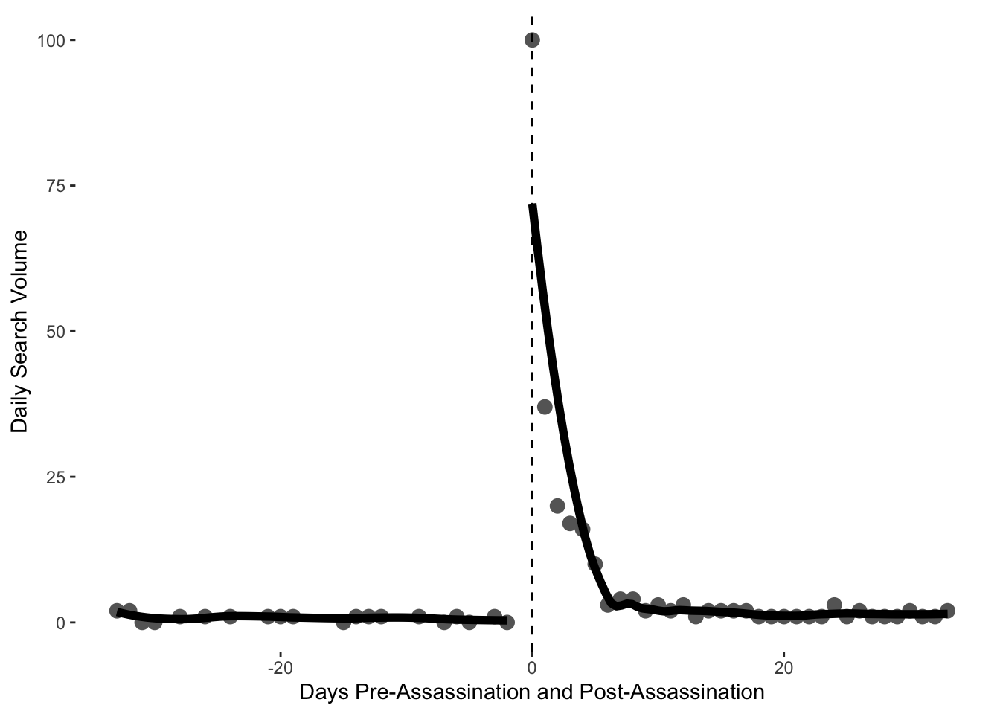

Week 4 Exercise
This week we looked at online and text data, and the various questions it throws up relating to quantitative research design. For the week’s coding task, we’ll be using data from the article by Pan and Siegel (2020). The actual raw tweet data used by these authors is not available in the replication materials. For good reason—there are ethical restrictions around sharing these data and Twitter’s own ToS forbids the distribution of tweet datasets.
Given that we don’t have access to these data, we are first going to go through some of the analyses conducted by the authors with the pre-processed data they do provide. We are then going to collect our own data from Google Trends, just as the authors do. We can achieve this in a few simple steps, described below.
Preparing and plotting the data
First we’re getting to read in the data on tweet volume and arrest dates of the imprisoned opinion leaders. Think about how these data have been prepared. The authors have collected data from the identified opinion leaders and have then summed the number of tweets produced by these accounts over daily intervals. This gives you an idea of one way we can make inferences from quantitative text data.
library(tidyverse)
library(gtrendsR)
library(ggthemes)
arrested <- read.csv("https://raw.githubusercontent.com/cjbarrie/teaching_material/master/arrested_tweet_volume.csv")Using these data we can reproduce Figure 1A from the paper using the ggplot package we ’ve encountered in weeks previous. In order to look at just the thirty days pre- and post-arrest, as in the figure, we first need to subset the data.
ggplot(arrested_month, aes(days_post_release, tweets, group=post_release)) +
geom_point(colour="gray40", size=3) +
geom_smooth(method="loess", se=F, colour="black", fill="black", span=.5, size=2)+
geom_vline(xintercept =0, linetype=2) +
labs(y="Daily Volume of Tweets", x = "Days Pre-Arrest and Post-Release")+
theme(panel.grid.major = element_blank(),
panel.grid.minor = element_blank(),
panel.background = element_blank())
The authors also used Google Trends data to look at the effect of arrests on public attention. We can also look at these data and reproduce their results.
gtrends <- read.csv("https://raw.githubusercontent.com/cjbarrie/teaching_material/master/gtrends_volume_month.csv")To arrive at these data, the authors sum the search volumes for each of the opinion leaders on the days of interest (pre- and post-arrest). We can then plot the difference in search intensity before and after arrest using code similar to that above.
ggplot(gtrends, aes(days_since_arrest, hits, group=post_arrest)) +
geom_point(colour="gray40", size=3) +
geom_smooth(method="loess", se=F, colour="black", fill="black", span=.5, size=2)+
geom_vline(xintercept =0, linetype=2) +
labs(y="Daily Search Volume", x = "Days Pre-Arrest and Post-Release")+
theme(panel.grid.major = element_blank(),
panel.grid.minor = element_blank(),
panel.background = element_blank())
Conducting t-tests
From eyeballing these figures, there seem to be differences in search volume before and after arrests are made. This does not, however, constitute statistical support for this inference. To check for significant before and after differences, we can use a t-test.
The authors provide disaggregated data on Google Trends Search volume for different individuals of interest.We can carry out t-tests on the before and after search volume for each of these to check for significant differences.
gtrends_actors <- read.csv("https://raw.githubusercontent.com/cjbarrie/teaching_material/master/gtrends_volume_disaggregated.csv")
#first we need to subset the data into the relevant categories of interest
clerics <- subset(gtrends_actors, actor_type=="sahwa_clerics"|
actor_type=="sunni_clerics")
shia <- subset(gtrends_actors, actor_type=="shia")
secular <- subset(gtrends_actors, actor_type=="liberals"|
actor_type=="lawyers"|
actor_type=="womens_rights"|
actor_type=="university_corruption")
#then we carry out the t-tests
t_test_clerics_month <- t.test(hits~post_arrest, data=clerics)
t_test_clerics_month##
## Welch Two Sample t-test
##
## data: hits by post_arrest
## t = 0.44419, df = 68.265, p-value = 0.6583
## alternative hypothesis: true difference in means is not equal to 0
## 95 percent confidence interval:
## -10.78340 16.95935
## sample estimates:
## mean in group 0 mean in group 1
## 23.63636 20.54839##
## Welch Two Sample t-test
##
## data: hits by post_arrest
## t = -1.3848, df = 45.758, p-value = 0.1728
## alternative hypothesis: true difference in means is not equal to 0
## 95 percent confidence interval:
## -16.007337 2.960025
## sample estimates:
## mean in group 0 mean in group 1
## 7.766667 14.290323##
## Welch Two Sample t-test
##
## data: hits by post_arrest
## t = -2.5337, df = 161.14, p-value = 0.01224
## alternative hypothesis: true difference in means is not equal to 0
## 95 percent confidence interval:
## -29.936857 -3.711172
## sample estimates:
## mean in group 0 mean in group 1
## 21.12222 37.94624What do we see here?
Using gtrendsR
Below, we use the R package gtrendsR. This will allow you to “query” the Google Trends API directly from your R console. In essence, this just means that you don’t need to go through the click-button process of visiting the Google Trends website, setting your parameters of interest, and downloading the data to an Excel spreadsheet. Instead, you can do everything within R itself.
In the code below, all we are doing in the first line is telling the API to download daily search volume for the Arabic word “سليماني” from December 01, 2019 to January 09, 2020. Qassem Soleimani was assassinated by a US air bombardment in Iraq on January 03, 2020. This event sparked outcry and mass funeral processions in both Iraq and Iran. We would therefore expect search interest for the General to increase around this time.
You can change the date parameters to update the date to the latest date available when you come to use this hand-out. The next line specifies the language of interest—here, Arabic. Finally, we tell the API which country we’re interested in—here, Iraq. We use the two letter country code for this. You can find a list of these here. You can find complete information on the gtrendsR package here. What do we see here?
sol <- gtrends(c("سليماني"),
time = "2019-12-01 2020-02-05",
hl = "ar",
geo = c("IQ"))
#data comes in "list" format so convert to dataframe for easier use
soldf <- as.data.frame(sol$interest_over_time)
#get date in R-readable format
soldf$date <- as.Date(soldf$date)
#hits is stored as "character" string variable but should be numeric
soldf$hits <- as.numeric(soldf$hits)## Warning: NAs introduced by coercionggplot(soldf, aes(date, hits)) +
geom_line(size = 0.5) +
xlab("Date") + ylab("Daily Search Volume") +
theme(panel.grid.major = element_blank(),
panel.grid.minor = element_blank(),
panel.background = element_blank())
In the figures used by Pan and Siegel, they split into days before and after arrests occur. For the Soleimani data, we might like to split into days before and after the killing of Soleimani by the US. When working with dates, it is helpful to have a numeric identifier for each day, if we want to manipulate these data or perform calculations on them. Therefore we first assign a numeric identifier to the dates.
## [1] 18264We can see that the numeric identifier for 03 January, 2020 is 18264. We therefore subtract this number from each of the numeric dates to obtain a column of numbers indicating how many days before or after the assassination of Soleimani.
As in the Pan and Siegel data, we then need a column telling us whether or not the day in question was before or after the assassination. This is simply a column of 1s and 0s depending on whether or not the datesol variable is positive or negative.
ggplot(soldf, aes(datesol, hits, group=postass)) +
geom_point(colour="gray40", size=3) +
geom_smooth(method="loess", se=F, colour="black", fill="black", span=.5, size=2)+
geom_vline(xintercept =0, linetype=2) +
labs(y="Daily Search Volume", x = "Days Pre-Assassination and Post-Assassination")+
theme(panel.grid.major = element_blank(),
panel.grid.minor = element_blank(),
panel.background = element_blank())## `geom_smooth()` using formula 'y ~ x'
Coding tasks
- Choose alternative search parameters for the Google Trends API and retrieve data for them.
- Plot these data over time.
- Choose a relevant date over which to split these data, and replot.
- Conduct a t-test on the before and after search volumes.